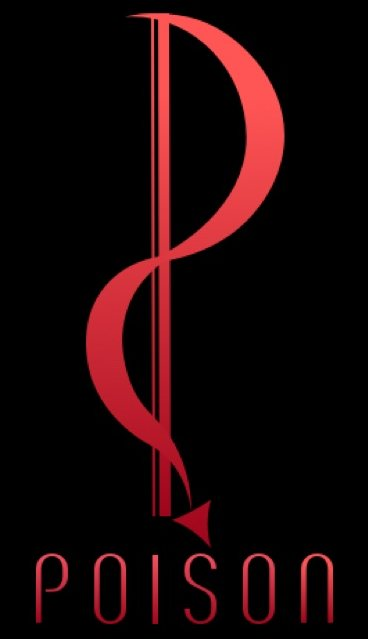
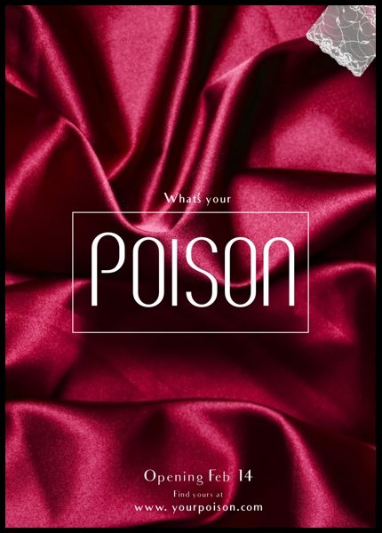
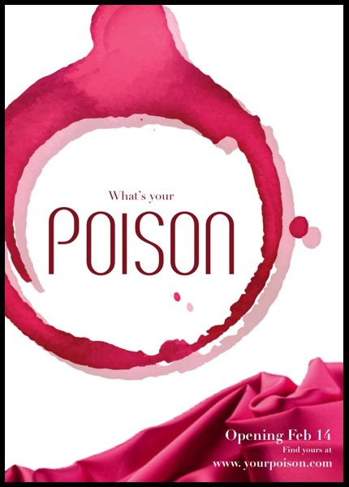
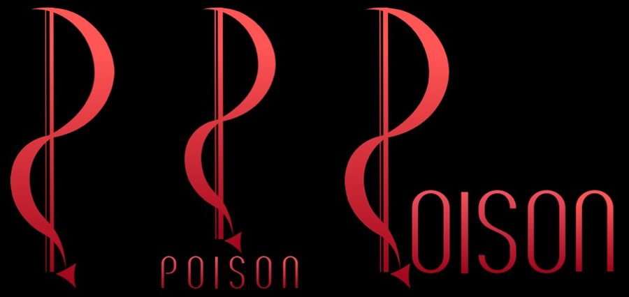
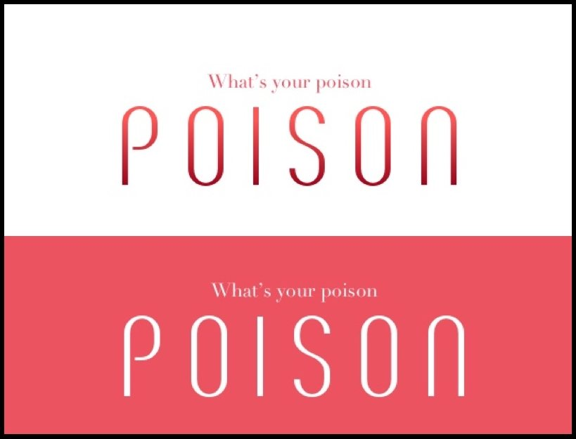
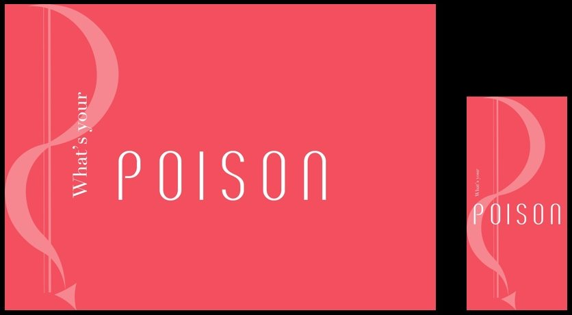
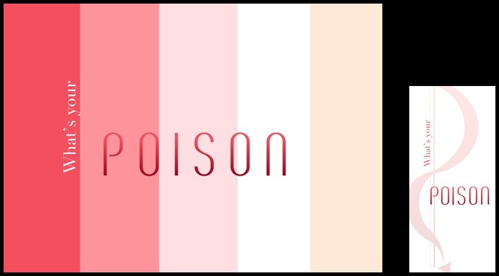
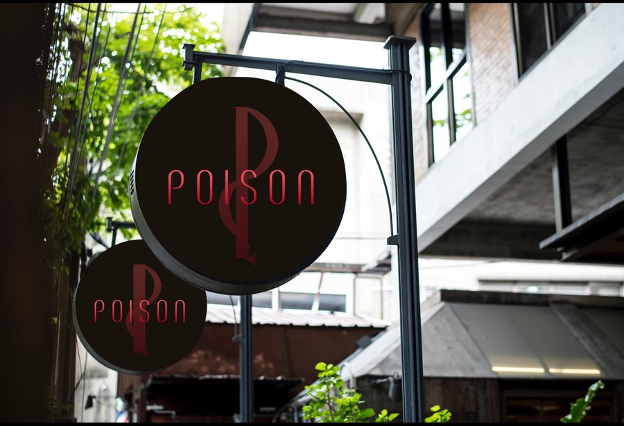
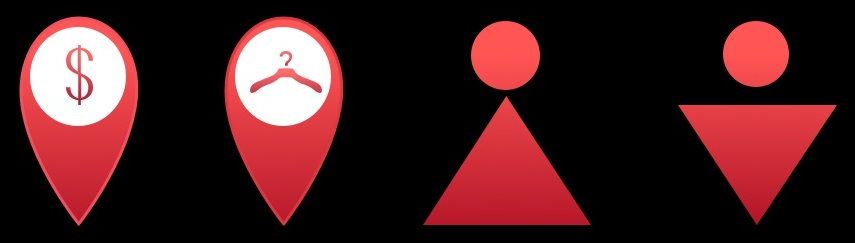

SUMMARY

This is a visual exploration of a hypothetical brand of luxury women’s lingerie called
Poison. The brand was named ‘Poison’ to draw analogy between high priced rare
liquor
and extremely selective, luxury lingerie line
that ‘Poison’ aims to be.


Inspiration
The inspiration for this brand was derived from the posters here. The
emphasis was on projecting an idea of classy passion, seduction, and
oomph!
IDENTITY SYSTEM

Logo and Alternatives
The logo is a stylized letter P which looks like its made of a shiny red
satin ribbon, often associated with lingerie. The ‘ribbon’ ends in a
sleek arrow which mimics a devil’s tail-end, thus following the themeof passion.
Logo designs
Color Palette
The main color palette focused on a whole range of feminity, from
soft, gentle baby pink
to intense, and passionate carnation
Color palette

Typography
For the main title, I used the Breve SC (BREVE SC) font with anincreased kerning to facilitate readability. This font emoted hautecouture, and when colored in various shared of red, it expressed
the a quality best described as magnetic and seductive.
I used the font Didot (Didot) for subtitle. This serif font further
enhanced the elegance of brand’s expression.
Typography


Digital design
I created two versions of the website and app landing page for Poison.
The first version was a clean, solid carnation
background with a faded logo and text in
white. The App mimicked the website
The second version used the color palette as a
striped background with a shaded ‘Poison’. The
app was a solid white with a faded logo


In-Store designs
Icons